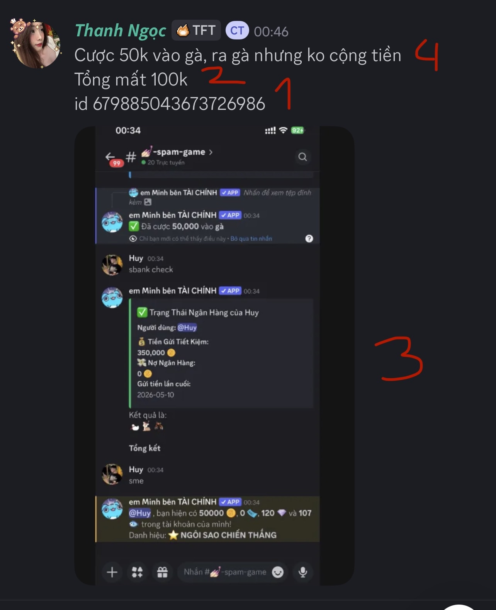

Bài viết này nhằm phục vụ cho việc các Moderator trong việc hoàn tiền cho các người chơi. Bài viết này sẽ giúp các bạn hiểu về các luật và cách trình bày chính bài viết của mình để được hoàn tiền nhanh và sử dụng Bot một cách tiện lợi và vui vẻ!
Một bài viết nên có những yếu tố sau đây:

Ví dụ trong bức ảnh trên thì bạn ấy đã:
Ngoài ra, có các dấu hiệu lỗi bạn nên chú ý:
Các mod chỉ xử lý vấn đề này ở trong kênh “bù tiền” trong MSBS. Ngoài ra các mod cũng sẽ không giải quyết nếu bạn vào bài post người khác đòi bù tiền.
Các mod khuyến khích tạo mới bài post chưa giải quyết, bằng cách thêm nhiều vụ mất tiền chưa được giải quyết.
Thống nhất hiện tại thì khi bị bug roll nhiều lần, kết quả đầu tiên được roll là kết quả duy nhất được chấp nhận, các kết quả còn lại là bug.
Các mod đang làm việc theo ca, trong đó thì ca sáng (5h-13h) và ca chiều (11h-22h) được phân công như sau:
| Ca làm việc | Người phụ trách (Moderators) |
|---|---|
| Ca Sáng | @svcrystal, @minhsanggdvn |
| Ca Chiều | @ombrelight, @hoanganh498 |
Làm ơn hãy ping mod đúng theo ca, để tránh rối và tiện lợi!
Chúng mình sử dụng dạng cảnh báo “strike”, trong đó nếu bạn có sai phạm thì sẽ bị ăn strike vô điều kiện. Nếu bạn có đóng góp chỉ ra sai phạm lớn thì sẽ được bỏ một strike nếu có. Tuỳ vào số lương strike thì bạn sẽ:
Ngoài ra hình phạt thì chúng mình sẽ trình bày theo dạng [x-y] tức nếu bị lần đầu thì sẽ làm theo x và các lần sau làm theo y. Nếu chỉ có mỗi [x] thì đó là sai phạm nặng và hiệu quả tức thì và làm theo x đó.
Chúng mình cũng xin viết tắt “strike” thành “sr”
Các điều này giúp cho môi trường đền bù công bằng và hiệu quả.
“mod”: ở đây chỉ moderator (người quản lý), hiện tại tính từ 5/26 thì MSB có 4 mod
“roll”: một lượt chốt kết quả trong staixiu và sbaucua. trong đó thông thường chỉ có đúng 1 roll cho một lượt game
“MSBS”: viết tắt cho: “MingSengBot Support”, là server hỗ trợ chính thức của MSB - MingSengBot
Cách trình bày luật: Ghi rõ mục và điều ở đằng sau nối liền
(*) Ví dụ, nếu người chơi A bị phát hiện lừa mod và lợi dụng thì để ban thì mod sẽ đưa ra lý do như sau:
Người chơi A vi phạm mục A4a trong đó là điều 8 thì sẽ trình bày: Vi phạm Điều A4a.8 trong Những điều cần lưu ý trong việc bù tiền.
đáng lý ra cái ngày để vô a1 nhưng k ai quan tâm đâu :)))
mình - hàu xin chúc các bạn chơi bot vui vẻ k cọc nha :)))) nhớ đọc cho kỹ á mình soạn tay mệt điên @.@ nếu mà đụng đến mình thì riêng sẽ xử phạt còn nặng hơn a4a :3